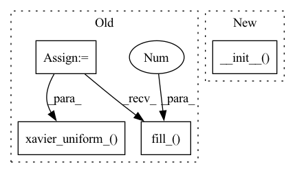

Pattern ID :25397
Before Change
del self.batch_linear
// Classification layer
self.classification1 = nn.Linear(in_features=self.n_filters * len(self.kernel_sizes),
out_features=self.n_classes)
// Initialize linear layers
nn.init.xavier_uniform_( self.classification1.weight, gain=1.0)
self.classification1.bias.data.fill_(0.01 )
def forward(self, x):
Forward a batch of sequences through network.
After Change
def __init__(self, model_dict, device="cpu"):
super().__init__( model_dict,
device=device,
embedding="word_embedding", // Change 1
embedding_dim=10,
linear_layer=False, // Change 3
)
def forward(self, x):
Forward a batch of sequences through network.
In pattern: SUPERPATTERN
Frequency: 3
Non-data size: 4
Instances Fragment ID: 77621771
Project Name: univiecube/deepnog
Commit Name: 388c55dcfaa848cb193b756308b97d95fb953697
Time: 2020-07-13
Author: sci@feldbauer.org
File Name: deepnog/models/deepfam.py
M Class Name: DeepFamAblation13
N Class Name: DeepFamAblation13
M Method Name: __init__(3)
N Method Name: __init__(3)
M Parent Class: DeepFamAblationBase
N Parent Class: DeepFamAblation1
M File Name: deepnog/models/deepfam.py
N File Name: deepnog/models/deepfam.py
M Start Line: 462
M End Line: 473
N Start Line: 575
N End Line: 580
Before Change
del self.batch_linear
// Classification layer
self.classification1 = nn.Linear(in_features=self.n_filters * len(self.kernel_sizes),
out_features=self.n_classes)
// Initialize linear layers
nn.init.xavier_uniform_( self.classification1.weight, gain=1.0)
self.classification1.bias.data.fill_(0.01 )
def forward(self, x):
Forward a batch of sequences through network.
After Change
def __init__(self, model_dict, device="cpu"):
super().__init__( model_dict,
device=device,
activation="selu", // Change 2
linear_layer=False, // Change 3
)
def forward(self, x):
Forward a batch of sequences through network.
Fragment ID: 77621772
Project Name: univiecube/deepnog
Commit Name: 388c55dcfaa848cb193b756308b97d95fb953697
Time: 2020-07-13
Author: sci@feldbauer.org
File Name: deepnog/models/deepfam.py
M Class Name: DeepFamAblation23
N Class Name: DeepFamAblation23
M Method Name: __init__(3)
N Method Name: __init__(3)
M Parent Class: DeepFamAblationBase
N Parent Class: DeepFamAblation2
M File Name: deepnog/models/deepfam.py
N File Name: deepnog/models/deepfam.py
M Start Line: 524
M End Line: 535
N Start Line: 628
N End Line: 632
Before Change
// Convolutional Layers
for i, kernel in enumerate(self.kernel_sizes):
conv_layer = nn.Conv1d(in_channels=self.embedding_dim,
out_channels=self.n_filters,
kernel_size=kernel)
// Initialize Convolution Layer, gain = 1.0 to match tensorflow implementation
nn.init.xavier_uniform_( conv_layer.weight, gain=1.0)
conv_layer.bias.data.fill_(0.01 )
self.add_module(f"conv{i + 1}", conv_layer)
// momentum=1-decay to port from tensorflow
batch_layer = nn.BatchNorm1d(num_features=self.n_filters,
eps=0.001,After Change
def __init__(self, model_dict, device="cpu"):
super().__init__( model_dict,
device=device,
embedding="word_embedding", // Change 1
embedding_dim=10,
)
class DeepFamAblation2(DeepFamAblationBase):
Ablation study of DeepFam to DeepNOG transition. Fragment ID: 77621773
Project Name: univiecube/deepnog
Commit Name: 388c55dcfaa848cb193b756308b97d95fb953697
Time: 2020-07-13
Author: sci@feldbauer.org
File Name: deepnog/models/deepfam.py
M Class Name: DeepFamAblation1
N Class Name: DeepFamAblation1
M Method Name: __init__(3)
N Method Name: __init__(3)
M Parent Class: DeepFamAblationBase
N Parent Class: DeepFam
M File Name: deepnog/models/deepfam.py
N File Name: deepnog/models/deepfam.py
M Start Line: 241
M End Line: 266
N Start Line: 395
N End Line: 399